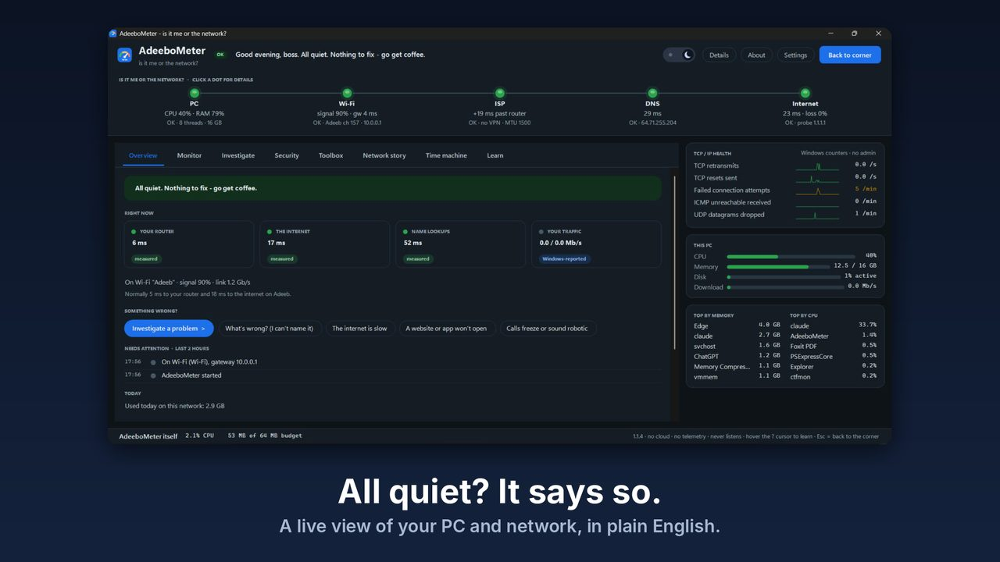

Free internet speed monitor for Windows
AdeeboMeter shows how much data your Windows PC is sending and receiving right now. Keep the desktop widget in view, or open the app for more detail on your connection.
See what changes when your internet slows down
- Check the live download and upload rates while the problem is happening.
- Compare those rates with router response time, internet latency, and DNS checks. A video call can stutter even when it uses very little bandwidth.
- Open Time Machine to review the same minute later. Check the network’s data usage if you want to know how much traffic went through it.
Live speed and a speed test measure different things
The live meter shows the traffic your PC is using. A quiet connection can show 0 Mb/s. To measure the connection’s capacity, run a separate throughput test against a suitable server.

Learn how speed and delay differ · Make a packet loss report for your ISP · Monitor your Windows PC